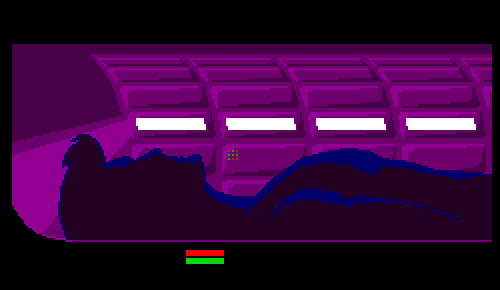

Kauai, Hawaii; 1983
Toshiba T1000LE had 10-MHz 80C86 CPU, 1 MB of RAM (expandable to 9 MB), 20-MB HDD and “double-CGA” graphics (640x400@1-bit) in a sleek 3.0-kg package. Weight and thickness reductions were possible thanks to then-new 2.5-inch hard drives. This beast was not slower than older 286 machines.